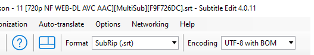

Anime Subtitle Translation To Persian
آموزش قدم به قدم برای ترجمه زیرنویس انیمه به فارسی با هوش مصنوعی Gemini
راهنمای کامل ترجمه حرفهای زیرنویس انیمه با Gemini 2.5 Pro

مقدمه: فراتر از یک ترجمه ماشینی
اگر شما هم به دنبال یک ترجمهی بینقص برای زیرنویس انیمه با استفاده از هوش مصنوعی هستید، حتماً با چالشهای ابزارهای فعلی آشنایید: ترجمههای تحتاللفظی، عدم درک لحن و اشتباهات فرهنگی.
مدل Gemini 2.5 Pro این بازی را تغییر داده، اما استفاده بهینه از آن نیازمند یک رویکرد هوشمندانه است.
راز اصلی در بهینهسازی داده ورودی نهفته است. با حذف اطلاعات اضافی مانند تایمکدها و تمرکز مدل صرفاً روی دیالوگ، میتوانیم به نتایجی دست پیدا کنیم که به طرز شگفتانگیزی به ترجمه انسانی نزدیک است.
این راهنما یک دستورالعمل عملی و سریع برای دستیابی به همین هدف است. بیایید با هم یاد بگیریم چطور از قدرت کامل Gemini برای خلق زیرنویسهایی حرفهای استفاده کنیم.
مرحله اول: آمادهسازی فایل زیرنویس (حذف تایمکدها)
در این مرحله، فایل زیرنویس خام را به یک فایل متنی ساده و کمحجم تبدیل میکنیم.
- آخرین نسخه نرمافزار رایگان Subtitle Edit را دانلود و نصب کنید.
- فایل ویدیویی مورد نظر را بکشید و داخل پنجره برنامه رها کنید (Drag & Drop) تا زیرنویسهای آن به طور خودکار بارگذاری شود.
- (اختیاری اما پیشنهادی) برای اطمینان از مرتب بودن خطوط، از منوی بالا به مسیر
Tools > Sort by > Start timeبروید. این کار به هوش مصنوعی کمک میکند تا ترتیب دیالوگها را بهتر درک کند. - حالا برای حذف تایمکدها، از منوی بالا به مسیر
File > Save asبروید. در پنجره باز شده، از لیست کشوییSave as type، فرمت MicroDVD (*.sub) را انتخاب و فایل را ذخیره کنید. - در نهایت، به محلی که فایل را ذخیره کردید بروید و پسوند آن را به صورت دستی از
.subبه.txtتغییر دهید.

خروجی این مرحله: یک فایل متنی ساده که فقط شامل تایمفریم و دیالوگهاست.
مرحله دوم: تنظیم محیط ترجمه در Google AI Studio
حالا وقت آن است که با Gemini کار کنیم.
- ابتدا وارد اکانت گوگل خود شوید
- با یک فیلترشکن مناسب، وارد سایت Google AI Studio شوید.
- سپس از پنل تنظیمات در سمت راست، مدل (
Model) را روی Gemini 2.5 Pro تنظیم کنید. - برای جلوگیری از ترجمههای ماشینی و رباتیک، تنظیمات مدل را به شکل زیر تغییر دهید:
Temperature:
این مقدار را که به طور پیشفرض
1است، به عددی بین0.2تا0.5کاهش دهید. (مقدار پیشنهادی من: 0.3).
Top P:
این مقدار را روی عددی بین
0.9تا0.95تنظیم کنید. (مقدار پیشنهادی من: 0.9).

این تنظیمات به مدل کمک میکند تا به جای خلاقیت بیش از حد، به دستورات شما (پرامپت) وفادار بماند و ترجمهای دقیقتر ارائه دهد.
مرحله سوم: ارسال دستور (پرامپت) و شروع ترجمه
- پرامپت اصلی (که در انتهای این راهنما قرار دارد) را کپی کرده و در کادر چت Google AI Studio پیست و ارسال کنید.
- (اختیاری اما پیشنهادی) پس از ارسال پرامپت، میتوانید آن را
Saveکنید تا برای استفادههای بعدی درHistoryشما ذخیره شود. - حالا کار اصلی شروع میشود! فایلی که در مرحله اول با پسوند
.txtساختید را آپلود کرده و روی دکمه RUN کلیک کنید تا فرآیند ترجمه آغاز شود.


نکات مهم در حین ترجمه:
- اتصال پایدار: برای جلوگیری از قطع شدن فرآیند، از یک فیلترشکن پایدار استفاده کنید.
- خطای Thinking: اگر مدل در حین کار متوقف شد و خطا داد، کافی است روی دکمه Rerun کلیک کنید تا از همان نقطه ادامه دهد.
- توقف خروجی: اگر ترجمه در میانهی کار متوقف شد، کافی است کلمه «ادامه بده» را تایپ و ارسال کنید. مدل به طور خودکار تشخیص میدهد از کجا باید کار را ادامه دهد.
- پایان کار: پس از اتمام ترجمه، کل متن خروجی را کپی کرده و در همان فایل
.txtقبلی جایگزین و ذخیره کنید.


مرحله چهارم: نهاییسازی و اصلاح زیرنویس در Subtitle Edit
فایل ترجمه شده ما آماده است، اما برای استفاده در ویدیو باید فرمت آن را درست کرده و مشکلات احتمالی راستچینسازی را برطرف کنیم.
- دوباره به برنامه Subtitle Edit برگردید.
- فایل
.txtکه حاوی ترجمه فارسی است را در برنامه بارگذاری کنید. - از منوی بالای برنامه،
Formatرا روی SubRip (*.srt) تنظیم کنید (این گزینه معمولاً اولین مورد در لیست است). - برای حل مشکل نمایش کلمات انگلیسی در کنار فارسی، تمام خطوط را با زدن کلید ترکیبی
Ctrl+Aانتخاب کنید. - سپس از منوی بالا به مسیر
Edit > Fix RTL via Unicode control charactersبروید. این کار جهت نمایش خطوط ترکیبی را اصلاح میکند. - در نهایت، فایل را با فرمت SubRip (*.srt) ذخیره کنید (
Save as).


تبریک! زیرنویس فارسی، روان و آمادهی تماشا است.
این پروژه با عشق به دنیای انیمه توسط Kthree ساخته شده است. اگر این راهنما به شما کمک کرد، باعث خوشحالی من است.
Made with ❤️ by Kthree
پرامپت اصلی برای Gemini
این پرامپت را در مرحله سوم در Google AI Studio وارد کنید.
...متن پرامپت شما بدون تغییر اینجا قرار دارد...